Fluid simulation and particle-fluid interaction¶
A new and experimental addition to sphere is the ability to simulate a mixture of particles and a Newtonian fluid. The fluid is simulated using an Eulerian continuum approach, using a custom CUDA solver for GPU computation. This approach allows for fast simulations due to the limited need for GPU-CPU communications, as well as a flexible code base.
The following sections will describe the theoretical background, as well as the solution procedure and the numerical implementation.
Derivation of the Navier Stokes equations with porosity¶
Following the outline presented by Limache and Idelsohn (2006), the continuity equation for an incompressible fluid material is given by:
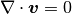
and the momentum equation:

Here, 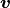 is the fluid velocity,  is the
fluid density,
is the
fluid density,  is the Cauchy stress tensor, and
is the Cauchy stress tensor, and
 is a body force (e.g. gravity). For incompressible
Newtonian fluids, the Cauchy stress is given by:
is a body force (e.g. gravity). For incompressible
Newtonian fluids, the Cauchy stress is given by:

 is the fluid pressure, 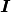 is the identity
tensor, and
is the fluid pressure, 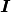 is the identity
tensor, and  is the deviatoric stress tensor, given
by:
is the deviatoric stress tensor, given
by:
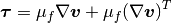
By using the following vector identities:
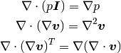
the deviatoric component of the Cauchy stress tensor simplifies to the following, assuming that spatial variations in the viscosity can be neglected:
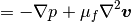
Since we are dealing with fluid flow in a porous medium, additional terms are introduced to the equations for conservation of mass and momentum. In the following, the equations are derived for the first spatial component. The solution for the other components is trivial.
The porosity value (in the saturated porous medium the volumetric fraction of
the fluid phase) denoted  is incorporated in the continuity and
momentum equations. The continuity equation becomes:
is incorporated in the continuity and
momentum equations. The continuity equation becomes:
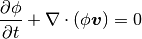
For the  component, the Lagrangian formulation of the momentum equation
with a body force becomes:
component, the Lagrangian formulation of the momentum equation
with a body force becomes:
![\frac{D (\phi v_x)}{D t}
= \frac{1}{\rho} \left[ \nabla \cdot (\phi \boldsymbol{\sigma}) \right]_x
+ \phi f_x](_images/math/33deba163d5e5027dea810eec538e06a1683ddf1.png)
In the Eulerian formulation, an advection term is added, and the Cauchy stress tensor is represented as isotropic and deviatoric components individually:
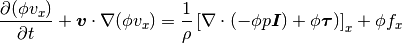
Using vector identities to rewrite the advection term, and expanding the fluid stress tensor term:
![\frac{\partial (\phi v_x)}{\partial t}
+ \nabla \cdot (\phi v_x \boldsymbol{v})
- \phi v_x (\nabla \cdot \boldsymbol{v})
= \frac{1}{\rho} \left[ -\nabla \phi p \right]_x
+ \frac{1}{\rho} \left[ -\phi \nabla p \right]_x
+ \frac{1}{\rho} \left[ \nabla \cdot (\phi \boldsymbol{\tau}) \right]_x
+ \phi f_x](_images/math/fc64cd1ec99f3144a0bc0590d0f67e6411cb8a7d.png)
Spatial variations in the porosity are neglected,

and the pressure is attributed to the fluid phase alone (model B in Zhu et al. 2007 and Zhou et al. 2010). The divergence of fluid velocities is defined to be zero:

With these assumptions, the momentum equation simplifies to:
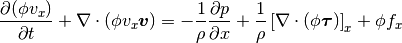
The remaining part of the advection term is for the component
found as:
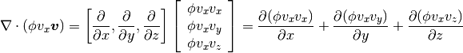
The deviatoric stress tensor is in this case symmetrical, i.e. 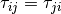, and is found by:
![\frac{1}{\rho} \left[ \nabla \cdot (\phi \boldsymbol{\tau}) \right]_x
= \frac{1}{\rho}
\left[
\left[
\frac{\partial}{\partial x},
\frac{\partial}{\partial y},
\frac{\partial}{\partial z}
\right]
\phi
\left[
\begin{matrix}
\tau_{xx} & \tau_{xy} & \tau_{xz}\\
\tau_{yx} & \tau_{yy} & \tau_{yz}\\
\tau_{zx} & \tau_{zy} & \tau_{zz}\\
\end{matrix}
\right]
\right]_x
= \frac{1}{\rho}
\left[
\begin{array}{c}
\frac{\partial (\phi \tau_{xx})}{\partial x}
+ \frac{\partial (\phi \tau_{xy})}{\partial y}
+ \frac{\partial (\phi \tau_{xz})}{\partial z}\\
\frac{\partial (\phi \tau_{yx})}{\partial x}
+ \frac{\partial (\phi \tau_{yy})}{\partial y}
+ \frac{\partial (\phi \tau_{yz})}{\partial z}\\
\frac{\partial (\phi \tau_{zx})}{\partial x}
+ \frac{\partial (\phi \tau_{zy})}{\partial y}
+ \frac{\partial (\phi \tau_{zz})}{\partial z}\\
\end{array}
\right]_x
= \frac{1}{\rho}
\left(
\frac{\partial (\phi \tau_{xx})}{\partial x}
+ \frac{\partial (\phi \tau_{xy})}{\partial y}
+ \frac{\partial (\phi \tau_{xz})}{\partial z}
\right)](_images/math/cb8fa4f651751e20465cefe0f4795667b8b948fa.png)
In a linear viscous fluid, the stress and strain rate
( ) is linearly dependent, scaled by the
viscosity parameter 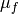:
) is linearly dependent, scaled by the
viscosity parameter 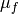:
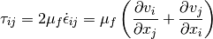
With this relationship, the deviatoric stress tensor components can be calculated as:
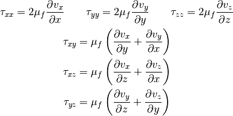
where is the dynamic viscosity. The above formulation of the fluid rheology assumes identical bulk and shear viscosities. The derivation of the equations for the other spatial components is trivial.
Porosity estimation¶
The solid volume in each fluid cell is determined by the ratio of the
a cell-centered spherical cell volume (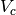) and the sum of intersecting
particle volumes (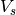). The spherical cell volume has a center at
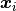, and a radius of  , which is equal to half
the fluid cell width. The nearby particles are characterized by position
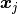 and radius
, which is equal to half
the fluid cell width. The nearby particles are characterized by position
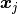 and radius  . The center distance is defined
as:
. The center distance is defined
as:
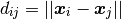
The common volume of the two intersecting spheres is zero if the volumes aren’t intersecting, lens shaped if they are intersecting, and spherical if the particle is fully contained by the spherical cell volume:
![V^s_{i} = \sum_j
\begin{cases}
0 & \textit{if } R_i + r_j \leq d_{ij} \\
\frac{1}{12d_{ij}} \left[ \pi (R_i + r_j - d_{ij})^2
(d_{ij}^2 + 2d_{ij}r_j - 3r_j^2 + 2d_{ij} R_i + 6r_j R_i - 3R_i^2)
\right] & \textit{if } R_i - r_j < d_{ij} < R_i + r_j \\
\frac{4}{3} \pi r^3_j & \textit{if } d_{ij} \leq R_i - r_j
\end{cases}](_images/math/2cb4dea80c947c94642b08f6a92ad5aa939dc9f3.png)
Using this method, the cell porosity values are continuous through time as particles enter and exit the cell volume. The rate of porosity change (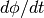) is estimated by the backwards Euler method by considering the previous and current porosity.
Particle-fluid interaction¶
The momentum exchange of the granular and fluid phases follows the procedure outlined by Gidaspow 1992 and Shamy and Zhegal 2005. The fluid and particle interaction is based on the concept of drag, where the magnitude is based on semi-empirical relationships. The drag force scales linearly with the relative difference in velocity between the fluid and particle phase. On the base of Newton’s third law, the resulting drag force is applied with opposite signs to the particle and fluid.
For fluid cells with porosities () less or equal to 0.8, the drag
force is based on the Ergun (1952) equation:
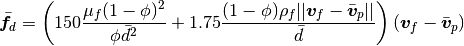
here, 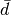 denotes the average particle diameter in the cell, 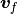 is the fluid flow velocity, and 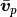 is the average particle velocity in the cell. All particles in contact with the previously mentioned cell-centered sphere for porosity estimation contribute to the average particle velocity and diameter in the fluid cell.
If the porosity is greater than 0.8, the cell-averaged drag force (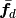 is found from the Wen and Yu (1966) equation, which considers the fluid flow situation:
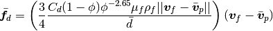
The drag coefficient 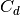 is evaluated depending on the magnitude of the Reynolds number 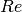:
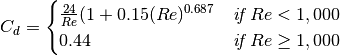
where the Reynold’s number is found by:
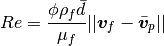
The interaction force is applied to the fluid with negative sign as a
contribution to the body force . The fluid interaction
force applied particles in the fluid cell is:

where 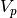 denotes the particle volume. Optionally, the above interaction force could be expanded to include the force induced by the fluid pressure gradient:
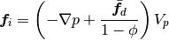
Fluid dynamics solution procedure by operator splitting¶
The partial differential terms in the previously described equations are found
using finite central differences. Modifying the operator splitting methodology
presented by Langtangen et al. (2002), the predicted velocity
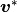 after a finite time step
 is found by explicit integration of the momentum equation.
is found by explicit integration of the momentum equation.
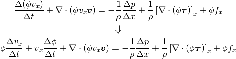
We want to isolate  in the above equation in order to project
the new velocity.
in the above equation in order to project
the new velocity.
![\phi \frac{\Delta v_x}{\Delta t}
= - \frac{1}{\rho} \frac{\Delta p}{\Delta x}
+ \frac{1}{\rho} \left[ \nabla \cdot (\phi \boldsymbol{\tau}) \right]_x
+ \phi f_x
- v_x \frac{\Delta \phi}{\Delta t}
- \nabla \cdot (\phi v_x \boldsymbol{v})
\Delta v_x
= - \frac{1}{\rho} \frac{\Delta p}{\Delta x} \frac{\Delta t}{\phi}
+ \frac{1}{\rho} \left[ \nabla \cdot (\phi \boldsymbol{\tau}) \right]_x
\frac{\Delta t}{\phi}
+ \Delta t f_x
- v_x \frac{\Delta \phi}{\phi}
- \nabla \cdot (\phi v_x \boldsymbol{v}) \frac{\Delta t}{\phi}](_images/math/d86c223034583bbd6c0fb7533a09ea48e931cb9b.png)
The term  is introduced as an adjustable, dimensionless parameter
in the range 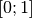, and determines the importance of the old pressure
values in the solution procedure (Langtangen et al. 2002). A value of 0
corresponds to Chorin’s projection method originally described
in Chorin (1968).
is introduced as an adjustable, dimensionless parameter
in the range 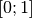, and determines the importance of the old pressure
values in the solution procedure (Langtangen et al. 2002). A value of 0
corresponds to Chorin’s projection method originally described
in Chorin (1968).
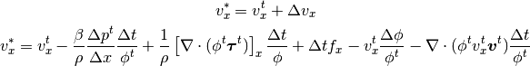
Here,  denotes the cell spacing. The velocity found
(
denotes the cell spacing. The velocity found
( ) is only a prediction of the fluid velocity at time
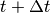, since the estimate isn’t constrained by the continuity
equation:
) is only a prediction of the fluid velocity at time
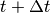, since the estimate isn’t constrained by the continuity
equation:
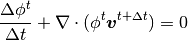
The divergence of a scalar and vector can be split:

The predicted velocity is corrected using the new pressure (Langtangen et al. 2002):
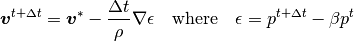
The above formulation of the future velocity is put into the continuity equation:
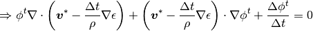
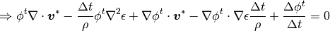

The pressure difference in time becomes a Poisson equation with added terms:
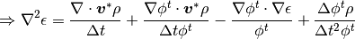
The right hand side of the above equation is termed the forcing function
 , which is decomposed into two terms,
, which is decomposed into two terms,  and
and  :
:
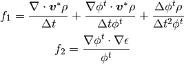
During the Jacobi iterative solution procedure remains constant,
while changes value. For this reason, is found only
during the first iteration, while is updated every time. The value
of the forcing function is found as:
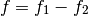
Using second-order finite difference approximations of the Laplace operator
second-order partial derivatives, the differential equations become a system of
equations that is solved using iteratively using Jacobi updates. The total
number of unknowns is  .
.
The discrete Laplacian (approximation of the Laplace operator) can be obtained by a finite-difference seven-point stencil in a three-dimensional, cubic grid with cell spacing 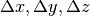, considering the six face neighbors:
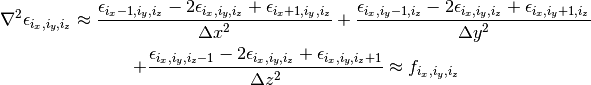
Within a Jacobi iteration, the value of the unknowns (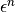) is
used to find an updated solution estimate ( ).
The solution for the updated value takes the form:
).
The solution for the updated value takes the form:

The difference between the current and updated value is termed the normalized residual:

Note that the  values cannot be 0 due to the above normalization
of the residual.
values cannot be 0 due to the above normalization
of the residual.
The updated values are at the end of the iteration stored as the current values, and the maximal value of the normalized residual is found. If this value is larger than a tolerance criteria, the procedure is repeated. The iterative procedure is ended if the number of iterations exceeds a defined limit.
After the values of are found, they are used to find the new
pressures and velocities:
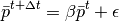
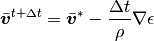
Boundary conditions¶
The lateral boundaries are periodic. This cannot be changed in the current
version of sphere. This means that the fluid properties at the paired,
parallel lateral ( and  ) boundaries are identical. A flow
leaving through one side reappears on the opposite side.
) boundaries are identical. A flow
leaving through one side reappears on the opposite side.
The top and bottom boundary conditions of the fluid grid can be either:
prescribed pressure (Dirichlet), or prescribed velocity (Neumann). The
(horizontal) velocities parallel to the boundaries are free to attain other
values (free slip). The Dirichlet boundary condition is enforced by keeping the
value of constant at the boundaries, e.g.:
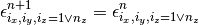
The Neumann boundary condition of no flow across the boundary is enforced by
setting the gradient of perpendicular to the boundary to zero,
e.g.: